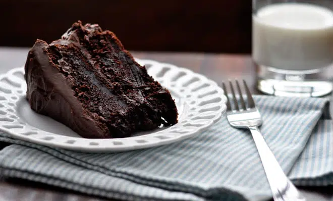

Chocolate Cake

This cocoa-based cake is deeply chocolatey and incredibly moist.
It surprises me every single time with how good it is for something so easy.
It is a great emergency chocolate cake to have in your repertoire for forgotten birthdays, last-minute visitors, or urgent Friday night chocolate cravings.
I love to smother it in gooey marshmallow frosting (the seven-minute kind made with just whipped egg whites, sugar, and vanilla).
Mmm… Drooling again. Note to self: try to control that.
This time I smothered it instead with a super easy cocoa buttercream frosting.
Not the fancypants Italian buttercream, the shortcut American-style buttercream that is basically just butter, icing sugar, and cocoa powder. Again, brain short-out aversion strategy.
INGREDIENTS
- 1 3/4 cups all purpose flour
- 2 cups granulated white sugar
- 3/4 cup unsweetened cocoa powder
- 1 1/2 tsp baking soda
- 3/4 teaspoon salt
- 2 large eggs
- 1 cup buttermilk
- 1/2 cup butter melted
- 1 tbsp vanilla extract
STEPS
- Preheat oven to 350 degrees.Grease and flour two 9-inch baking pans (or line with parchment paper circles) and set aside.
- Inthe large bowl of a standing mixer, stir together flour, sugar, cocoa, baking soda, and salt. Add eggs, buttermilk, melted butter and vanilla extract and beat until smooth (about 3 minutes). Remove bowl from mixer and stir in hot coffee with a rubber spatula. Batter will be very runny.
- Pour batter evenly between the two pans and bake on middle rack of oven for about 35 minutes, until toothpick inserted in centre comes out clean with just a few moist crumbs attached.
- Allow to cool 15 minutes in pans, then run a butter knife around the edges of each cake. Place a wire cooling rack over top of each pan. Wearing oven mitts, use both hands to hold the racks in place while flipping the cakes over onto the racks. Set the racks down and gently thump on the bottom of the pans until the cakes release. Cool completely before handling or frosting.